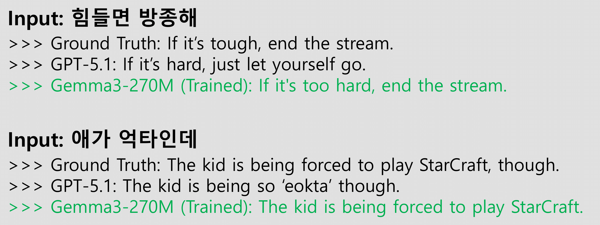
An Empirical Study of On-Device Translation for Real-Time Live-Stream Chat on Mobile Devices
AACL-IJCNLP, 2026
[arXiv] [dataset] [github]
I'm an AI Research Engineer at Smilegate.
My research interests include Role-Playing Agents (RPAs), Game AI, AI-driven Non-Player Characters (NPCs), Retrieval-Augmented Generation (RAG), On-Device AI, and Machine Translation.
Contact: k4ke@korea.ac.kr

AACL-IJCNLP, 2026
[arXiv] [dataset] [github]

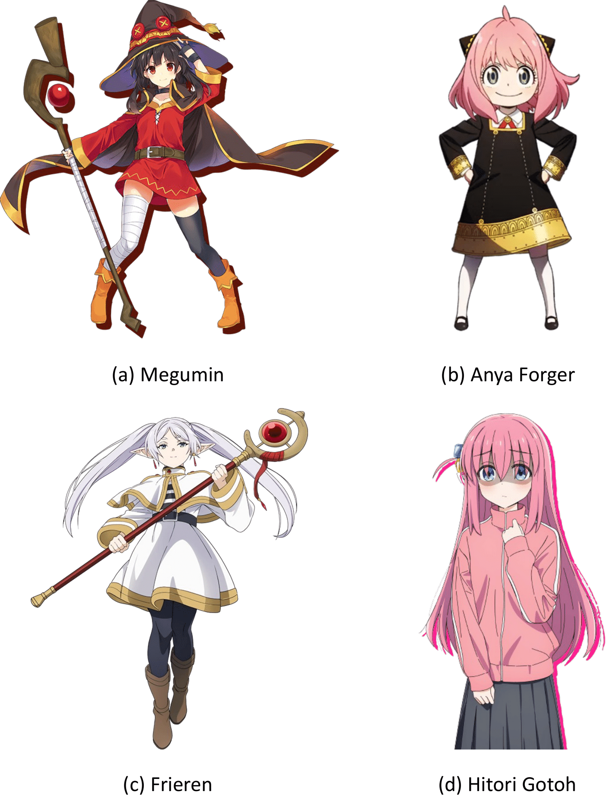
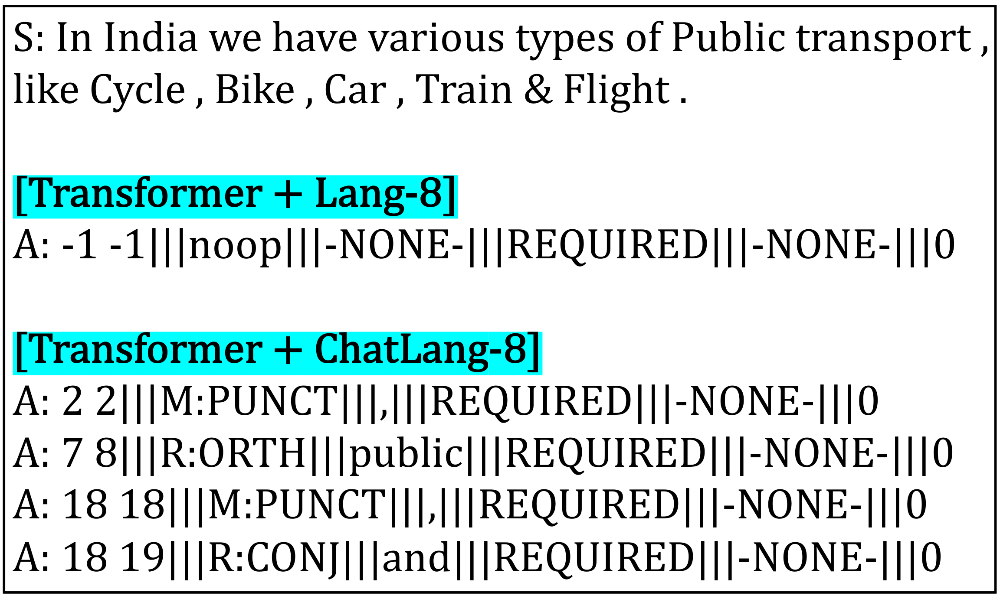
Preprint, 2024
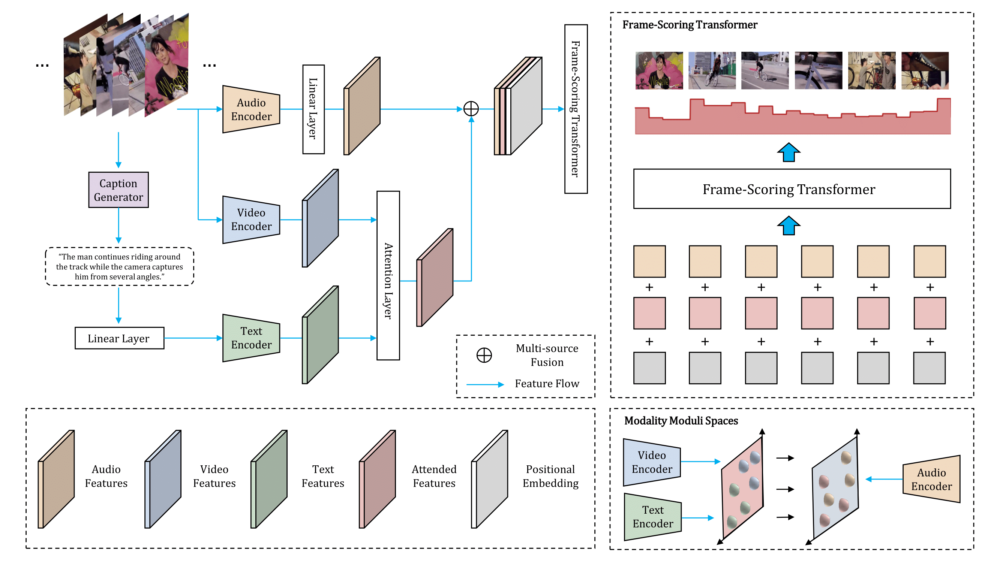
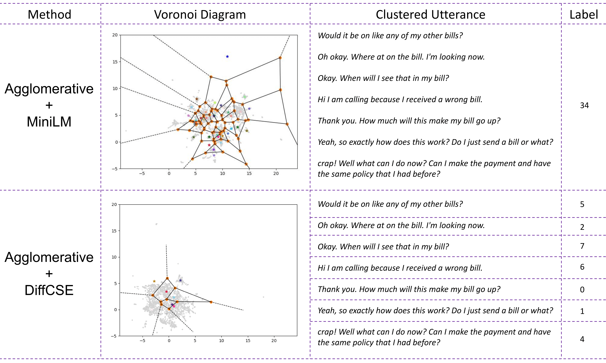
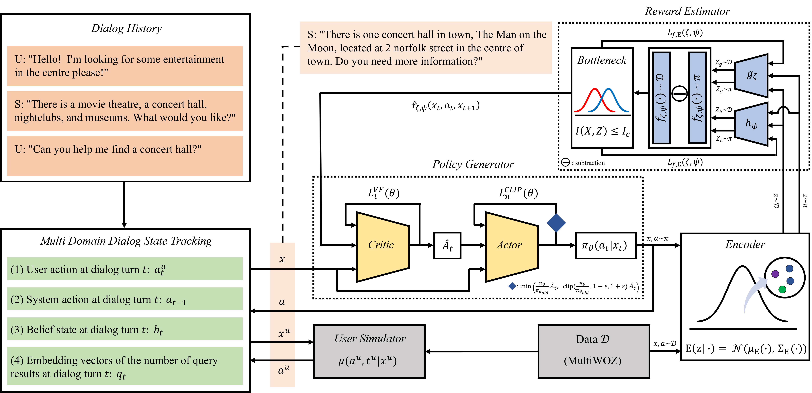
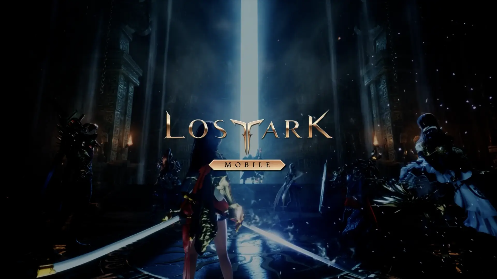
2026.05.11 - present (release: TBA)
Lost Ark Mobile brings a world of adventure and epic stories to mobile. Get ready to begin your journey.
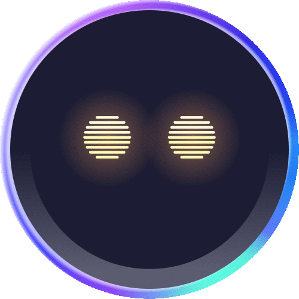
2026.01.01 - 2026.05.10 (released 2025.04.17)
SARSA (쌀사) is an AI manager that supports streamers with their broadcast content and hosting, and helps them communicate with their fans. In the SARSA project, I worked on improving the overall framework of the existing service, advancing individual modules such as Automatic Speech Recognition (ASR) and speaker diarization, and developing Live Recap, which provides post-stream feedback to help streamers grow. Through these enhancements, SARSA is evolving into an AI manager that grows alongside streamers.
2024.09.27 - 2025.12.31 (released 2025.03.26)
[video] [video2] [video3] [video4] [video5]
SOOPi (수피) is an AI assistant based on streamer personas. Through SOOPi, users can chat freely with their favorite streamers and get personalized recommendations for broadcast content they might enjoy. To prevent hateful and harmful behavior, such as sexual harassment, we introduced SHIELD (SOOP's Hate speech Identification Engine for Lasting Defense), a safety classifier that detects various types of adversarial safety risks. Anyone who subscribes to a streamer available on SOOPi can use it. Try it now!

First Place, 2022.06.10
[slide] [github] [video1] [video2]
The Azure Virtual Hackathon aims to tackle social problems such as climate change and accessibility using Azure, Microsoft's cloud platform. Our entry, "Hi Azure!: Helping video creators who are visually-impaired edit videos using Azure Cloud AI!", is a framework that makes video editing and content creation more accessible to visually impaired creators by extracting visual features from video, converting them to speech, and providing them as frame-level descriptions. We won first place in the hackathon, and I also placed first in the Microsoft Cloud Skills Challenge (1/63 = 1.58%).
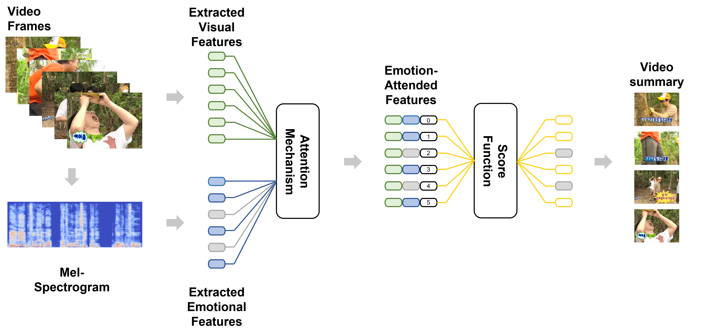
Innopolis Foundation
Second Place (2/61 = 3.27%), 2022.04.15
We postulate that frames in which emotional information appears frequently are correlated with video highlights. Our model first extracts visual and audio features from a video simultaneously, and then applies an attention mechanism to these features. Finally, it predicts importance scores from the emotion-attended features and generates highlights based on those scores.
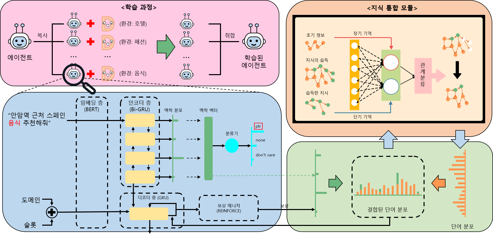
Electronics and Telecommunications Research Institute (ETRI)
Runner-Up Award (14/43 = 32.55%), 2020.10.20
In this project, we propose a novel meta-reinforced multi-domain task-oriented dialog agent that exploits an autonomously growing knowledge base and extends an existing single-domain agent algorithm to multiple domains. Our method is designed to infer information unseen during training, as well as the relations among domain, slot, and value triples, and to respond to domains beyond those it was trained on.
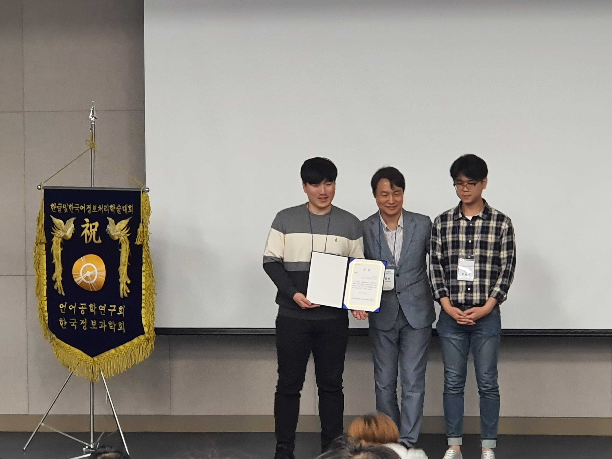
Korean Institute of Information Scientists and Engineers
Encouragement Award, 2019.10
The 31st Annual Conference on Human and Cognitive Language Technology (HCLT 2019) was held at the Korea Advanced Institute of Science and Technology (KAIST) in Daejeon. We received the Encouragement Award at the 2019 Korean Information Processing System Competition.
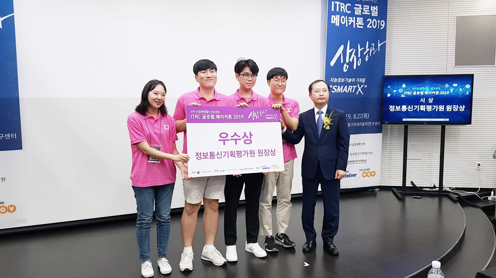
Ministry of Science and ICT, Hyundai (Sponsor)
Second Place (2/34 = 5.88%), 2019.08
[video] [vlog] [news] [news2] [press]
ITRC Global Makerthon 2019 was held at Hanyang University. Our team proposed simple noise-canceling software for target noises (e.g., cafe or factory noise) and won second place.
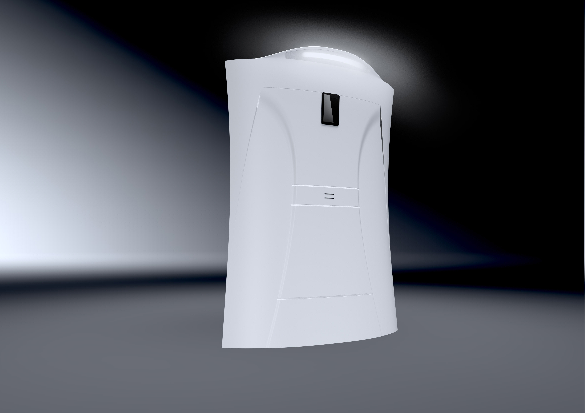
DB Foundation
Runner-Up Award (90/1200 = 7.5%), 2016.11
We proposed a simple closet that helps people keep their clothes clean and organized, and we invented a novel hanger sensor and actuator for this project. I collaborated with the designer Jeongse Park, and we were awarded the runner-up prize.
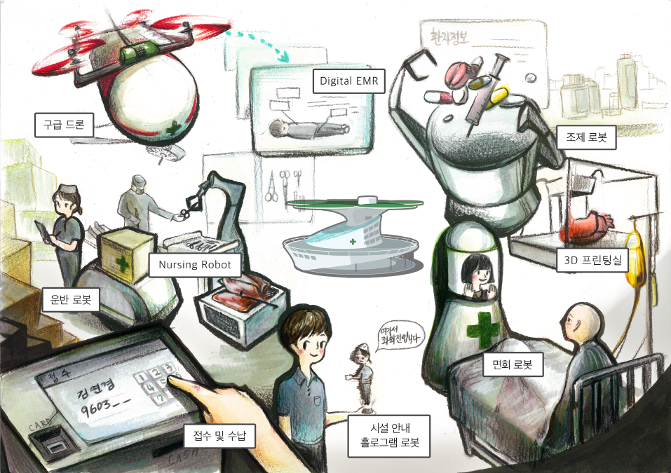
Ministry of Science, ICT and Future Planning
Encouragement Award (19/473 = 4.01%), 2016.10
We proposed a smart hospital scenario based on future robot technology. I collaborated with Minji Kim (a nurse), Yeonkyung Kim (a designer), and Kihwan Shin (a computer scientist) on this project, and we won the Encouragement Award.
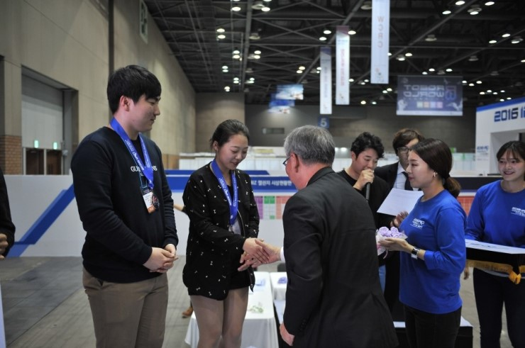
Ministry of Trade, Industry and Energy
Bronze Medal, 2016.10
This challenge consisted of four missions: (1) traffic sign recognition, (2) autonomous parking, (3) stopping in front of a pedestrian crossing, and (4) a free mission of our choice. We won the bronze medal.
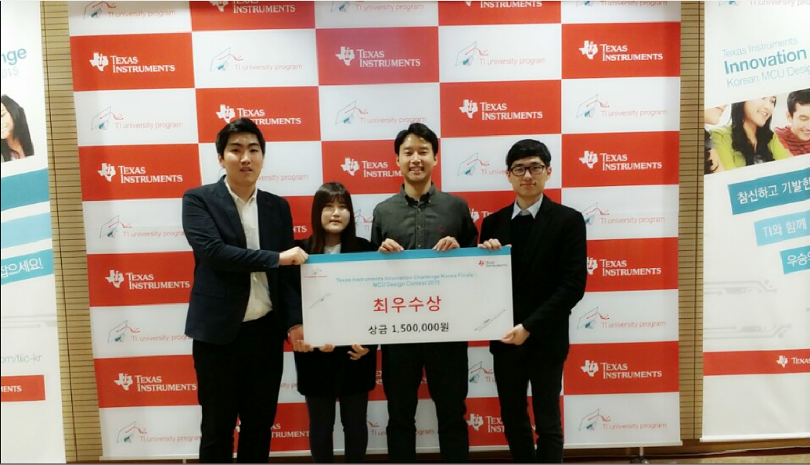
Texas Instruments Korea
Second Place (2/70 = 2.85%), 2015.11
We proposed a novel racing simulator that is fun and safe to enjoy at a much lower price than existing racing simulators. To this end, we invented a new elastic actuator. We won second place.
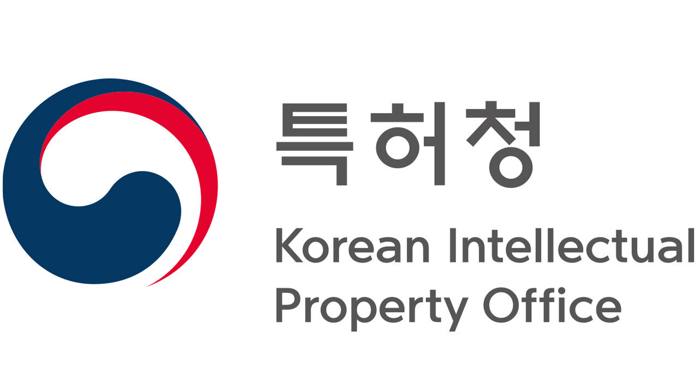
Korea Intellectual Property Office
2023.06.01 - 2040.07.27
Patent No. 10-2540549
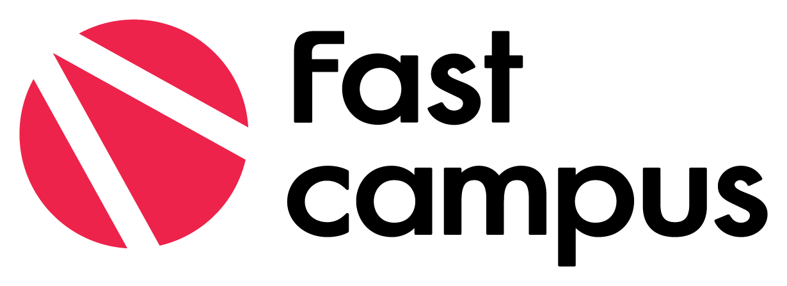
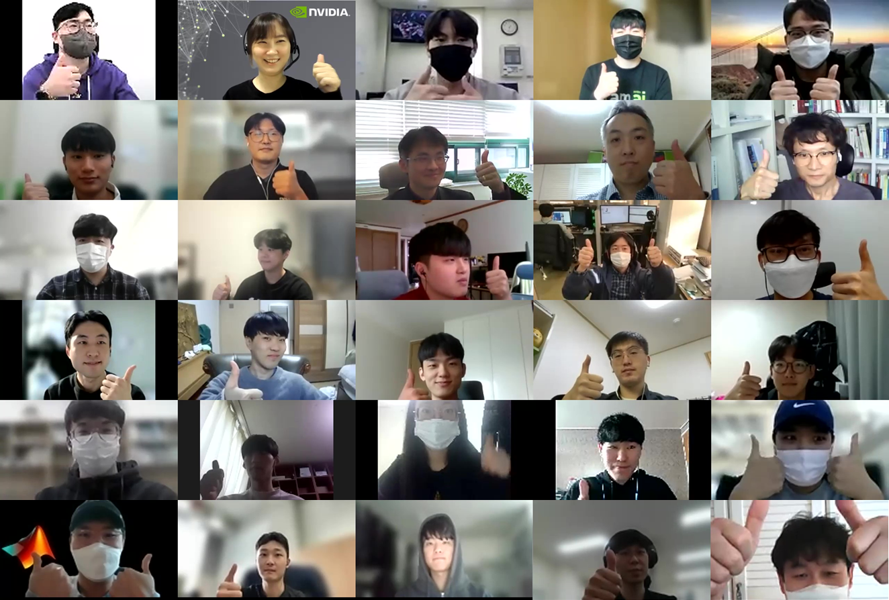
NVIDIA, OpenACC, SEOULTECH, and the Korean Society for Computational Science and Engineering
2021.12, Mentor (with Hyungon Ryu at NVIDIA)
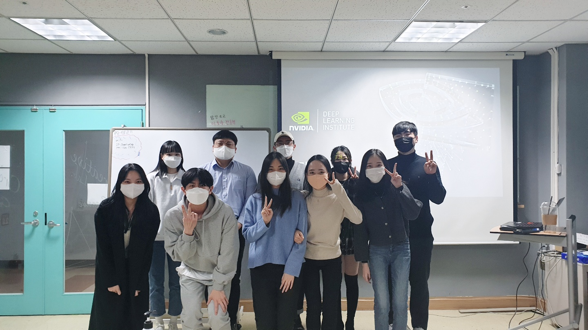
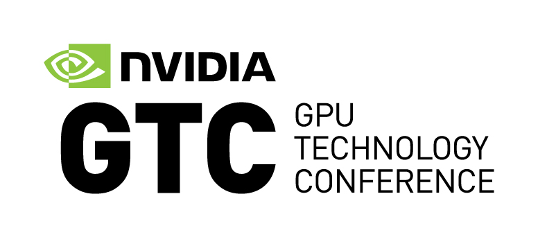
NVIDIA GPU Technology Conference 2021 (GTC21)
2021.11, Teaching Assistant
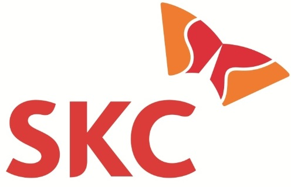
NVIDIA Deep Learning Institute
[pdf] [url] (University Ambassador Certificate)
[pdf] (Building Transformer-Based NLP Applications, Spring 2022 - Winter 2022)
[pdf] (Fundamentals of Deep Learning, Summer 2021 - Winter 2021)
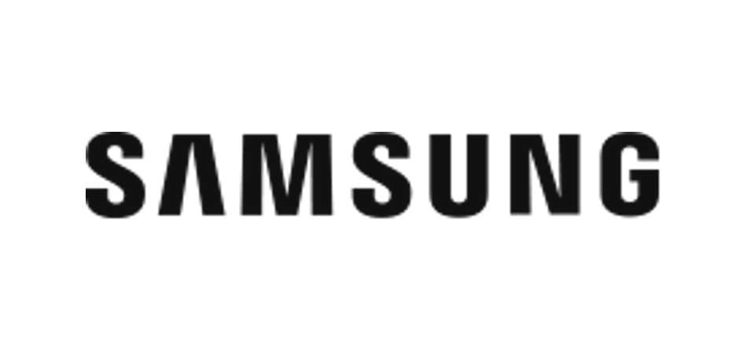
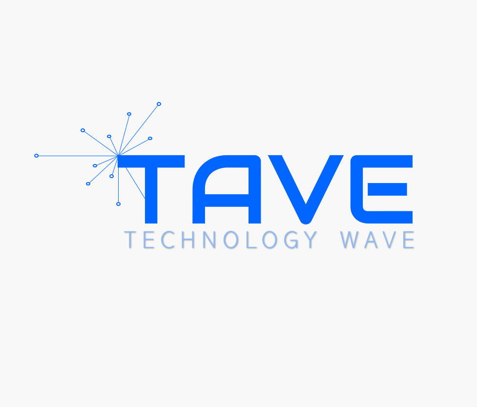
TAVE, leader of the Reinforcement Learning team
Summer 2020 - Winter 2020
[pdf] (Outstanding Member Award, 5/69 = 7.24%, 2020.11)
[pdf] (First place, 1/8 = 12.5%, 2020.11)
[pdf] (Outstanding Member Award, 3/69 = 4.34%, 2020.09)
[pdf] (Second place, 2/20 = 10%, 2020.09)
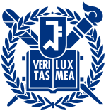
Korea Student Aid Foundation, mentored by Lim Cheol-ho
Spring 2017 - Winter 2017
{kind=link}
![[map]](images/map.png){kind=link}
![[review]](https://jeiyoon.github.io/images/yeardream22_review.jpg){kind=link}